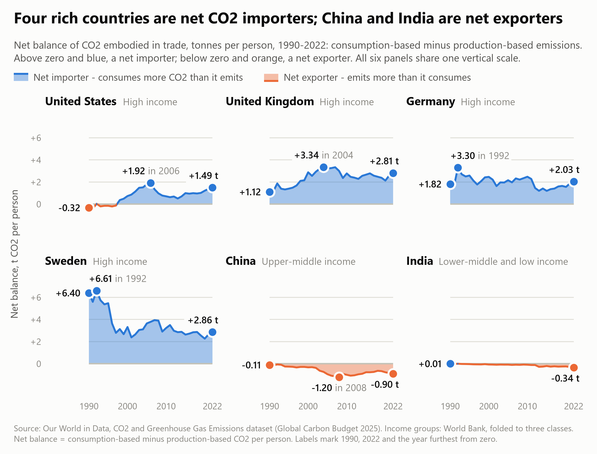

The central question
Has economic growth in post-industrial nations genuinely decoupled from carbon emissions, or have wealthy countries merely outsourced their footprint by importing emissions-intensive goods from developing nations?
This page remixes Hannah Ritchie's Our World in Data article Many countries have decoupled economic growth from CO2 emissions, even if we take offshored production into account (2021), with the same publisher's CO2 dataset for 1990-2022. It follows six countries: the United States, the United Kingdom, Germany and Sweden, which are high-income economies, and China and India, the two largest developing economies.
The two answers predict different things. If rich countries cut their emissions only by moving production abroad, the CO2 counted where goods are consumed would not fall. If the decoupling is real, it falls on both counts.
How to read this page
- Production-based CO2
- What is emitted inside a country's borders. Also called territorial.
- Consumption-based CO2
- Production-based CO2 plus the emissions embodied in imports, minus those embodied in exports.
- Net balance
- Consumption minus production, in tonnes per person. Above zero the country is a net importer of embodied CO2; below zero it is a net exporter.
- Colour
- Blue is the consumption side and orange the production side wherever a chart separates the two. In visualization 2 colour names the country instead.
All values are per person. GDP per capita is in international-$ at 2011 prices.
Visualization 1: linked views of growth and the net balance
AltairThe top panel shows one country's GDP per capita and its CO2 per capita on both accounts, as percent change since 1990. The scatter below places every country that has a World Bank income group by its GDP per capita and its net balance, averaged over the years brushed in the top panel. Drag across the years to move the window, and change the country with the menu or by clicking a ringed bubble.
Most countries in every income group sit a little above zero, as small net importers. The exporting side is a short list of large economies, led by China and India.
python scripts/vis1_altair_linked.py to write
web/altair_export.html, then reload this page.
Visualization 2: the path each country took
D3 v7Each line follows one country through 33 years, with GDP per capita along the horizontal axis and consumption-based CO2 per capita up the vertical axis. Time is not on an axis: it runs along the line, so drag the year slider or press play. The four steps below walk through one reading, and the production-based path shows the gap between what a country emits and what it consumes.
The grey rays mark a constant carbon intensity of income. A path that crosses to a shallower ray is decoupling in relative terms: less CO2 for each dollar. A path that also heads downward is decoupling in absolute terms: less CO2 for each person. All six countries crossed to shallower rays. Only the four high-income countries turned downward.
Interactive: hover or use the arrow keys for values. Open visualization 2 on its own page.
Visualization 3: the gap, country by country
Seaborn and MatplotlibThe net balance itself, one panel per country on shared axes. Blue areas above zero are years in which a country consumed more CO2 than it emitted; orange areas below zero are years in which it emitted more than it consumed. The United Kingdom's import balance went from +1.12 t per person in 1990 to +3.34 t in 2007 and has eased to +2.81 t.
python scripts/vis3_seaborn_diverging.py and then
python scripts/capture_web.py, which copies the figure to
web/img/.

What the three views say together
The decoupling is real on both accounts. From 1990 to 2022 GDP per capita rose in all four high-income countries while their CO2 per capita fell, whether it is counted where it is emitted or where the goods are consumed.
Trade still changes the size of the result. In the United Kingdom production-based CO2 per capita fell 57% and consumption-based CO2 36%. The United States (27% and 18%) and Germany (40% and 34%) show the same order, and Sweden the reverse (48% and 52%). All four were still net importers of embodied CO2 in 2022, by +1.49 t per person in the United States, +2.81 t in the United Kingdom, +2.03 t in Germany and +2.86 t in Sweden, so their territorial figures understate what they consume. China (-0.90 t) and India (-0.34 t) were net exporters.
How much of each territorial cut did a wider import balance give back? 33% in the United States, 29% in the United Kingdom and 4% in Germany; in Sweden the balance shrank. In the United States and the United Kingdom the giving back happened between 1990 and 2007, when their consumption-based CO2 rose while their production-based CO2 fell or stood still. Since 2007 both accounts have fallen together.
Imported emissions are part of the picture, but they do not explain the fall away: the consumption-based figures fell too.
Sources
- Data: Our World in Data, CO2 and Greenhouse Gas Emissions dataset (github.com/owid/co2-data), retrieved 4 October 2026. CO2 emissions on both accounts are from the Global Carbon Budget 2025; GDP is from the Maddison Project Database 2023.
- Income groups: World Bank country classification by income for fiscal year 2027, as served by the World Bank API on the same day.
- Original article: Hannah Ritchie (2021), Many countries have decoupled economic growth from CO2 emissions, even if we take offshored production into account, Our World in Data.
How this page was made
Visualization 1 was built in Python with Altair, visualization 2 in the browser with D3 v7, and visualization 3 in Python with Seaborn and Matplotlib. One preparation script writes the tables that all three read, so the numbers agree across the page.
Visualization 2, the D3 chart, was built with AI coding assistance. Visualization 1, visualization 3, the data preparation scripts and the written analysis were completed independently, without AI assistance. The report carries the full disclosure for each visualization.
The page has no build step and loads nothing from other sites: D3 is bundled in
the vendor folder under its ISC licence.